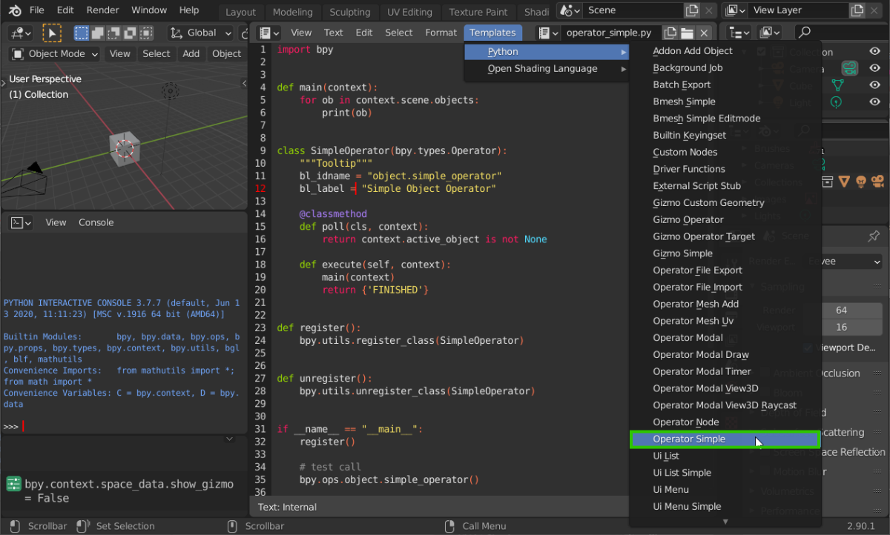

Übung 3 - Operatoren & Addons
Bisher sind alle Funktionalitäten, die wir mit unseren Scripten erstellt haben auch nur als solche ausführbar - als Script im Texteditor. In dieser Übung wollen wir das ändern und Blender selbst um eine Benutzeroberfläche für die Generierung unseres Turms erweitern
Operatoren 
Wir haben bereits die ops Kategorie des bpy Moduls kennengelernt. Nun wollen wir unseren eigenen Operator schreiben, der dann auch über die API aufgerufen und mit der F3-Suche gefunden werden kann.
- öffne im Text Editor das “Operator Simple” Template. 
Sehen wir uns hier nun ersteinmal die Klasse SimpleOperator an
class SimpleOperator(bpy.types.Operator):
"""Tooltip"""
bl_idname = "object.simple_operator"
bl_label = "Simple Object Operator"
@classmethod
def poll(cls, context):
return context.active_object is not None
def execute(self, context):
main(context)
return {'FINISHED'}
- Mit der Deklaration
class SimpleOperator(bpy.types.Operator)geben wir an, dass unsere Klasse ein Operator ist - also vonbpy.types.Operatorerbt. - Darunter können wir mit
"""Mein Tooltipp"""eine Beschreibung angeben, die dem Nutzer beim überfahren des Operators mit dem Cursor angezeigt wird. bl_idnameist der pfad API-Pfad unter dem der Operator aufrufbar sein wird"object.simple_operator"lässt sich dann mitbpy.ops.object.simple_operator()aufrufen.bl_label
-
Die
pollMethode ist optional. Sie ist eine statische Methode (daher@classmethod) und benötigt daher keine Instanz der Klasse, um aufgerufen zu werden.clsist hier die Referenz auf die sie beinhaltende Klasse selbst (währendselfimmer eine Instanz referenziert). Poll empfängt zudem den aktuellen Kontex -
Die
executeMethode ist der tatsächlich ausgeführte Code beim aufrufen des Operators. Ihr wird hierselfübergeben (in Python wird überself.meine_variableauf Membervariablen der aktuellen Klasseninstanz zugegriffen) und wiederum der aktuelle Kontext.
Der ausgeführte Code wurde hier in die main Methode ausgelagert. Diese könnte auch anders heißen und andere Parameter haben. In diesem Beispiel wird über jedes Objekt in der aktuellen Szene context.scene.objects iteriert und dieses in der Konsole ausgegeben. for lässt dich in Python nutzen wie foreach in anderen Sprachen.
Schließlich fallen noch die beiden Methoden register und unregister auf. Diese sind außerhalb des Klassenrumpfes und dienen zur Registrierung der Klassen in der API bzw zur Deregistrierung bei Deaktivierung des Addons.
Wenn viele Klassen zu registrieren sind, lässt sich auch die
register_classes_factorynutzen, der ein Tuple an Klassen übergeben wird.register, unregister = bpy.utils.register_classes_factory( (MeineKlasse1, MeineKlasse2, MeineKlasse3,) )
- Zu guter Letzt folgen die etwas kryptische Zeilen
if __name__ == "__main__":
register()
# test call
bpy.ops.object.simple_operator()
Die Überprüfung if __name__ == "__main__" überprüft dabei lediglich, ob das Script gerade über den Texteditor gestartet wird oder einfach nur als Modul importiert wurde. Hier kann also Code untergebracht werden, der nicht ausgeführt wird, wenn das Script als Addon installiert wird. In diesem Fall also die Registrierung des Operators in der API und ein Testlauf.
- Stelle sicher, dass Preferences → Interface → Developer Extras aktiviert ist (nur dann lassen sich so erstellte Operatoren mit F3 suchen)
- Führe das Skript Operator Simple im Texteditor aus
- Öffne die Systemkonsole mit Window → Toggle System Console
- Suche im mit F3 nach Simple Object Operator
In der Systemkonsole wird nun eine Liste der Objekte in der Szene ausgegeben.
blender.exe
found bundled python: C:\Blender\daily\blender-2.91.0-7ff6bfd1e0af-windows64\2.91\python <bpy_struct, Object("Cube") at 0x000001D2821FC088> <bpy_struct, Object("Light") at 0x000001D2821FC608> <bpy_struct, Object("Camera") at 0x000001D2821FBB08>>}}
Properties
Die wenigsten Operatoren sind einfach so ohne weitere Angaben ausführbar. Fast alle Operatoren lassen sich in ihrer Funktionalität durch Parameter beeinflussen. In Blender heißen solche Parameter von Operatoren Properties.
Properties lassen sich ganz einfach als Eigenschaften der Klasse, die den Operator definiert implementieren (also die Klasse, die von bpy.types.Operator erbt und die eine execute-Methode definiert). Hierzu können innerhalb des Klassenrumpfes Eigenschaften definiert werden, denen ein Aufruf einer der folgenden Funktionen zugewiesen wird.
bpy.props.IntProperty
bpy.props.BoolProperty
bpy.props.FloatProperty
bpy.props.FloatVectorProperty
Diesem Funktionsaufruf werden dann name (Label des Operators in der GUI), sowie optional eine description und ein default - Wert zugewiesen.
my_float: bpy.props.FloatProperty(
name="My Float",
description="does stuff with the thing.",
default = 1)
Es handelt sich hierbei nicht um klassische Variablendeklaration. Wir weisen keinen Wert einer Python-Variablen hinzu, wir sagen Blender nur: “Erstelle in deiner internen Datenstruktur eine Float-Variable mit diesem Namen etc.”
import bpy
def main(context, loc):
for ob in context.scene.objects:
ob.location = loc
Passt das Operator Simple Template folgendermaßen an:
Zunächst legen wir in der Operatorklasse eine
FloatVectorPropertyan und weisen ihr Name, Beschreibung und Defaultwert zu.Nun können wir unsere Property anwenden. Diese sind innerhalb der Klasse über das Schlüsselwort
self(ähnlich wiethisin anderen Sprachen) aufrufbar. In diesem Beispiel Fügen wir unserermainMethode einen Parametervaluehinzu und übergeben bei deren Aufruf in derexecuteMethodeself.my_vector.Damit beim Ausführen des Operators auch etwas passiert, ändern wir in
maindie Position jedes Objekts zu diesem Wert.Sind die Properties so der Operatorklasse hinzugefügt, sind sie bei Aufruf des Operators über die Python Konsole bereits einstellbar.
- Führe das Script aus und teste den Operator mit der Python-Konsole:
>>> bpy.ops.object.simple_operator(my_vec=(2,2,2))Alle Objekte in der Szene sollten nun an die Position (2, 2, 2) verschoben werden.
import bpydef main(context, loc):
for ob in context.scene.objects: ob.location = locclass SimpleOperator(bpy.types.Operator): """Tooltip""" bl_idname = "object.simple_operator" bl_label = "Simple Object Operator" bl_options = {"REGISTER", "UNDO"}
@classmethod def poll(cls, context): return context.active_object is not None def execute(self, context): main(context, self.my_vec) return {'FINISHED'} my_vec: bpy.props.FloatVectorProperty( name='My Vector', description='does stuff with the thing.', default = (1, 1, 1))def register(): bpy.utils.register_class(SimpleOperator)
def unregister(): bpy.utils.unregister_class(SimpleOperator)
if name == "main": register()
# test call bpy.ops.object.simple_operator()
- Damit Properties nun auch in einem Menü beim Aufruf des Operators eingestellt werden können, müssen wir das Blender in der Operatorklasse mit einer weiteren bl_… Zeile:
bl_options = {"REGISTER", "UNDO"}sagen.- Testet den Operator mit dem
F3Suchmenü im Viewport

Wandelt das Turmgenerator-Skript vom letzten mal in einen Operator um und macht dessen Parameter zu Operator-Properties.
Addons
bl_info Dictionary (rechts) angegeben, dass wir ganz oben in unser Skript einfügen. Verpflichtend anzugeben sind dabei nur Name, Author und Kategorie.bl_info = {
"name": "Cubedimension",
"author": "Ich <ich@webmail.hs-furtwangen.de>",
"version": (1, 0),
"blender": (2, 91, 0),
"location": "View3D > Search Menu > Cubedimension",
"description": "Creates a cool Cube Dimension",
"warning": "Nur ausfüllen falls es etwas zu warnen gibt",
"doc_url": "",
"category": "Add Mesh",
}
Nicht selbsterklärende Parameter von bl_info
version |
gibt die (frei wählbare) Versionsnummer des Addons an. |
blender |
ist die Blender Version, mit der das Addon getestet wurde (was nicht heißt, dass es nicht auch in anderen Versionen funktionieren kann) |
location |
zeigt den Weg zur UI des Addons (nur als Anleitung für den Nutzer) |
doc_url |
Link zur Dokumentation, falls diese existiert (was meist wünschenswert ist) |
category |
Gibt die Kategorie unter der das Addon in den Einstellungen angezeigt wird |
Wandelt das Turmgenerator-Skript nun in ein Addon um und installiert es. Auch die Deinstallation sollte reibungslos klappen.
Ressourcen & Tutorials zum Thema
| Art/Länge | Titel | Beschreibung | Quelle |
|---|---|---|---|
| Your Own Operator - Scripting for Artists [8] | Operators | Blender Cloud - Dr. Sybren A. Stüvel | |
| From Script to Add-on - Scripting for Artists [9] | Operators | Blender Cloud - Dr. Sybren A. Stüvel |